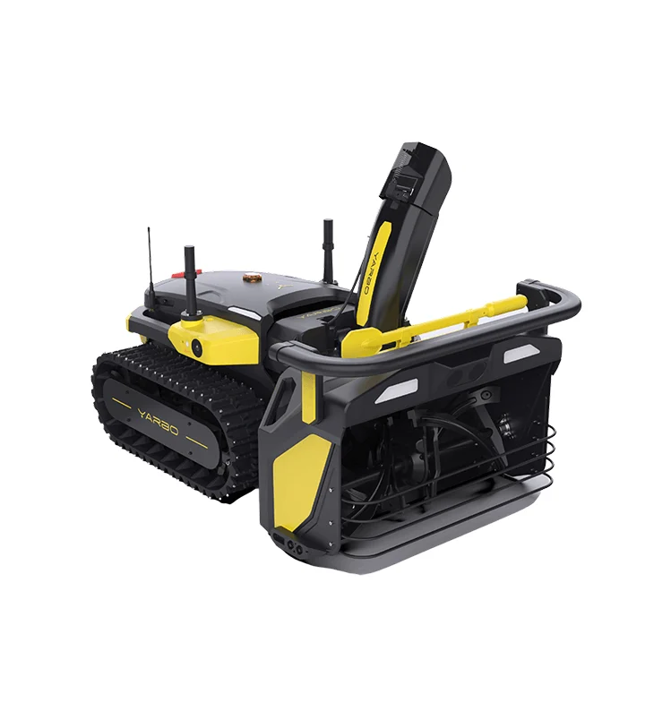
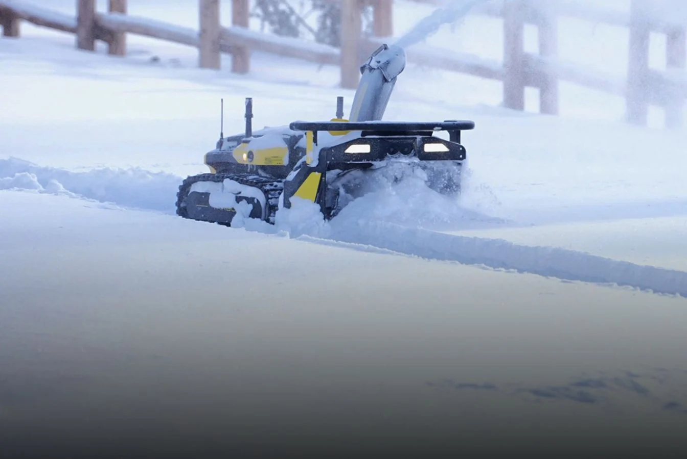
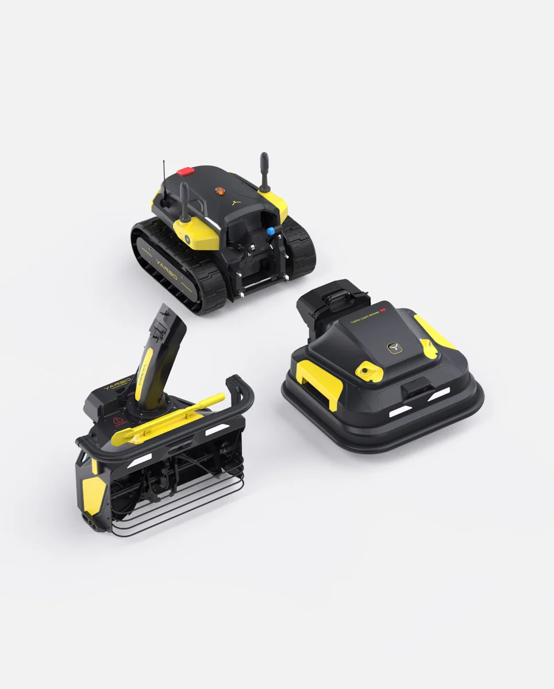
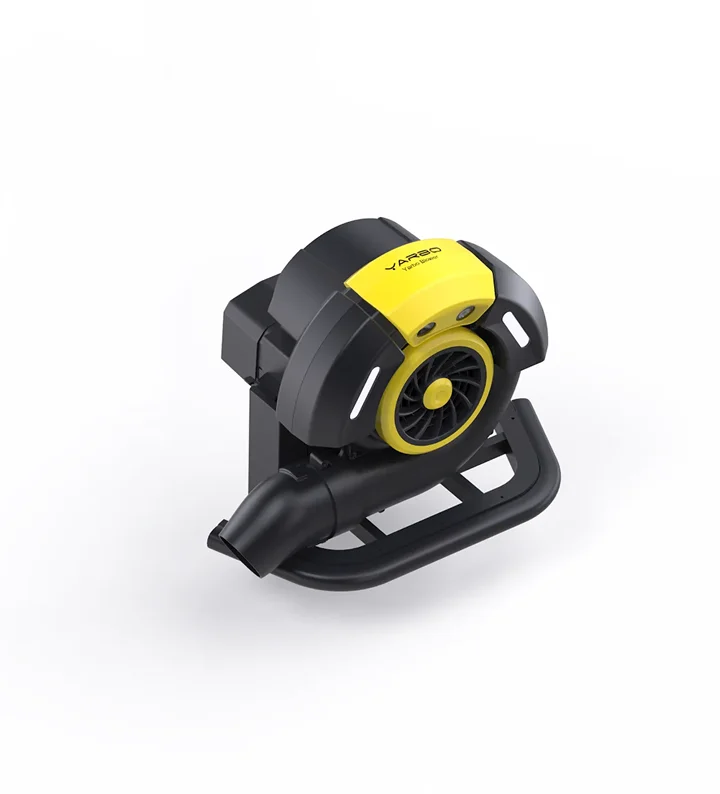
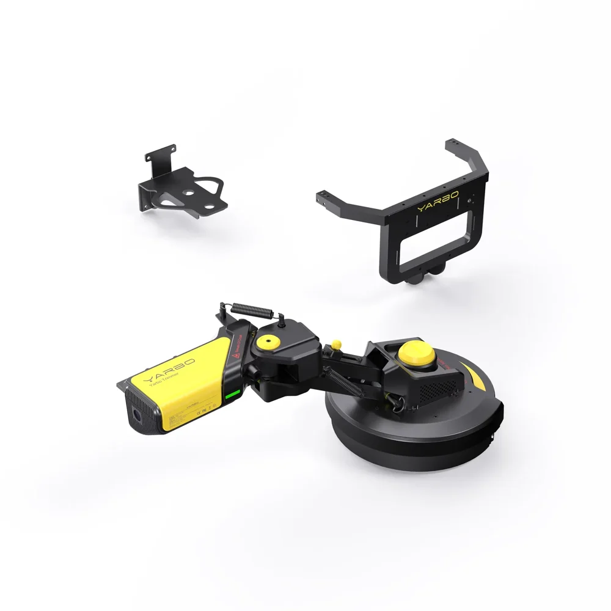

Постройте карту
Задайте рабочие зоны, маршруты и границы территории в приложении.
Зимой — снегоуборщик. Летом — газонокосилка. Меняйте навесной модуль, сохраняя роботизированную базу.

Гусеничная платформа, рабочий модуль и транспортировка инвентаря — в разных сценариях.


Одна роботизированная база, единое приложение и сменное оборудование под сезон. Подберём состав системы с учётом вашего участка.
Задайте рабочие зоны, маршруты и границы территории в приложении.
Подключите нужный модуль и настройте параметры его работы.
Запланируйте работу. После выполнения задачи робот вернётся на зарядку.

Yarbo Snow Blower убирает снег на дорожках, подъездных путях и открытых площадках. Направление выброса настраивается для каждой зоны.
Параметры производителя. Результат зависит от состояния снега и условий участка.
Обсудить мой участокТри сценария для знакомства с системой. Состав, совместимость и стоимость подтвердим при подборе.
Роботизированная база и снегоуборочный модуль. Для дорожек, парковки и подъезда к дому.
Запросить подбор
Одна база, снегоуборщик и газонокосилка Pro. Уход за территорией в два сезона.
Запросить подбор
Конфигурация с навесным оборудованием под сезонные задачи вашего участка.
Запросить подборСнегоуборщик, газонокосилка, воздуходувка и триммер для сезонных задач. Подберём оборудование с учётом задач и особенностей территории.

Двухступенчатая система уборки снега с управлением направлением выброса.

Газонокосильный модуль для регулярного ухода за газоном по расписанию.

Сбор листьев и лёгкого мусора направленным потоком воздуха.

Обработка кромок газона. Совместимость с базой и косилкой уточняется при подборе.
Тележки, щётки, отвалы и расходные материалы. У прицепной оснастки проверяем крепление, полную массу и тяговое сопротивление.
Перевозка инвентаря и материалов. Нужна подходящая сцепка; полная масса тележки с грузом и условия маршрута проверяются отдельно.
Механическая щётка собирает траву и листья в бункер при движении. Не является активным подметальным модулем Yarbo; сцепка и тяговая нагрузка требуют проверки.
Сдвигает свежий снег в режиме отвала. Цена зависит от версии и крепления: в российских каталогах встречаются предложения 18 000–41 800 ₽.
Среднее арифметическое найденных цен без доставки и установки. При n=1 показан ориентир одного каталога. Для отвала усреднены разные версии; совместимость уточняется. Это выборка открытых предложений, а не статистика всего рынка. Проверено: 10.11.2026. Показаны ориентиры российских предложений; окончательные состав, совместимость и стоимость подтверждаем до заказа. Доставка, установка и настройка оплачиваются отдельно.
| Компонент и назначение | Цена, ₽ | Основание |
|---|---|---|
| Yarbo ФаркопПодключение подходящего прицепного оборудования. Тележка, переходники и монтаж рассчитываются отдельно. | 4 500 ₽ | Цена одного каталога: источники
|
| Yarbo Снегоуборочная лопатаРучная лопатка для очистки снегоуборщика. Не путать с навесным отвалом. | 900 ₽ | Цена одного каталога: источники
|
| Yarbo Док-станцияВозврат робота на зарядку после работы. | 80 000 ₽ | Цена одного каталога: источники
|
| Yarbo АккумуляторЗамена тягового аккумулятора совместимой версии. | 108 000 ₽ | Цена одного каталога: источники
|
| Гусеницы для снегоуборщика YarboЗимняя ходовая оснастка; подбирается под версию платформы. | 32 900 ₽ | Цена одного каталога: источники
|
| Yarbo Противоскользящие шипы для гусеницы (100 шт.)Комплект из 100 шипов для гусениц. | 3 000 ₽ | Цена одного каталога: источники
|
| Yarbo RTK-антенна для дата-центра и мобильных устройствАнтенна навигационной системы. | 1 900 ₽ | Цена одного каталога: источники
|
| Yarbo Набор штифтов и шплинтов (8 комплектов)Запасные крепёжные элементы: 8 комплектов. | 3 000 ₽ | Цена одного каталога: источники
|
| Yarbo Режущие лезвия и болты (40 шт.)Расходные лезвия с болтами: 40 шт. | 3 000 ₽ | Цена одного каталога: источники
|
| Yarbo Модуль газонокосилки ProЦена за отдельный модуль, без роботизированной базы. Версию и совместимость подтверждаем при подборе. | 290 000 ₽ | Цена одного каталога: источники
|
| Yarbo Модуль воздуходувкиЦена за отдельный модуль, без роботизированной базы. Версию и совместимость подтверждаем при подборе. | 220 000 ₽ | Цена одного каталога: источники
|
| Yarbo Модуль газонокосилкиЦена за отдельный модуль, без роботизированной базы. Версию и совместимость подтверждаем при подборе. | 220 000 ₽ | Цена одного каталога: источники
|
| Yarbo Модуль триммераЦена за отдельный модуль, без роботизированной базы. Версию и совместимость подтверждаем при подборе. | 89 000 ₽ | Цена одного каталога: источники
|
Предоставляем услуги установки, настройки и обслуживания Yarbo и других роботов: размещение зарядной станции, проверка связи, картирование, рабочие зоны, расписания, обучение и техническая поддержка.
Услуги и сопровождениеОсновные параметры для первого знакомства с модулем. Полная спецификация уточняется для выбранной версии оборудования.
Источник: Yarbo Russia| Рабочая ширина | 61 см |
|---|---|
| Высота захвата снега | 30,5 см |
| Дальность выброса | 1,8–12,2 м |
| Навигация | RTK-GPS и датчики окружения |
Поможем выбрать роботизированную платформу, спроектировать автоматизацию или организовать сервис.
Для подбора решения расскажите о площадке, задачах и желаемом сроке запуска.